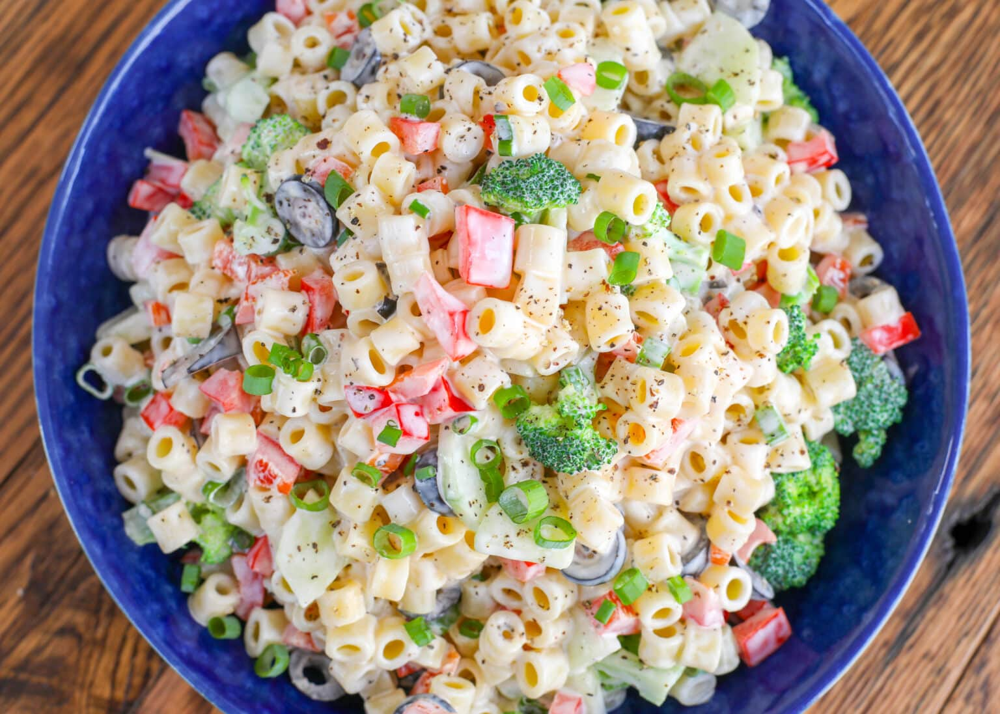

Creamy Pasta Salad
Click here to go back to the home page!
Source

Description
Light and slightly tangy creamy pasta salad, with just enough dressing to coat the noodles and vegetables, this is one heck of an awesome summer pasta salad.
Ingredients
- salad macaroni or ditalini pasta
- tiny broccoli florets
- diced cucumber
- finely diced red pepper
- sliced black olives
- very thinly sliced green onion
- mayonnaise
- plain vinegar
- kosher salt
- freshly ground black pepper
- sugar
Steps
- In a large pot, cook the pasta according to the directions on the package, adding a generous tablespoon or so of kosher salt to the water as it cooks.
- Just before the noodles are done cooking, add the broccoli to the pot. Let the broccoli boil for about 30 seconds and then drain everything into a large strainer. Rinse well with cold water.
- Stir together the mayonnaise, vinegar, salt, pepper, and sugar in a large mixing bowl.
- Add the cooked pasta and broccoli to the bowl and stir well to coat.
- Add the cucumber, pepper, olives, and onions and stir again.
- Taste and adjust seasonings, if needed. Cover and refrigerate until ready to serve. Stir again just before serving.